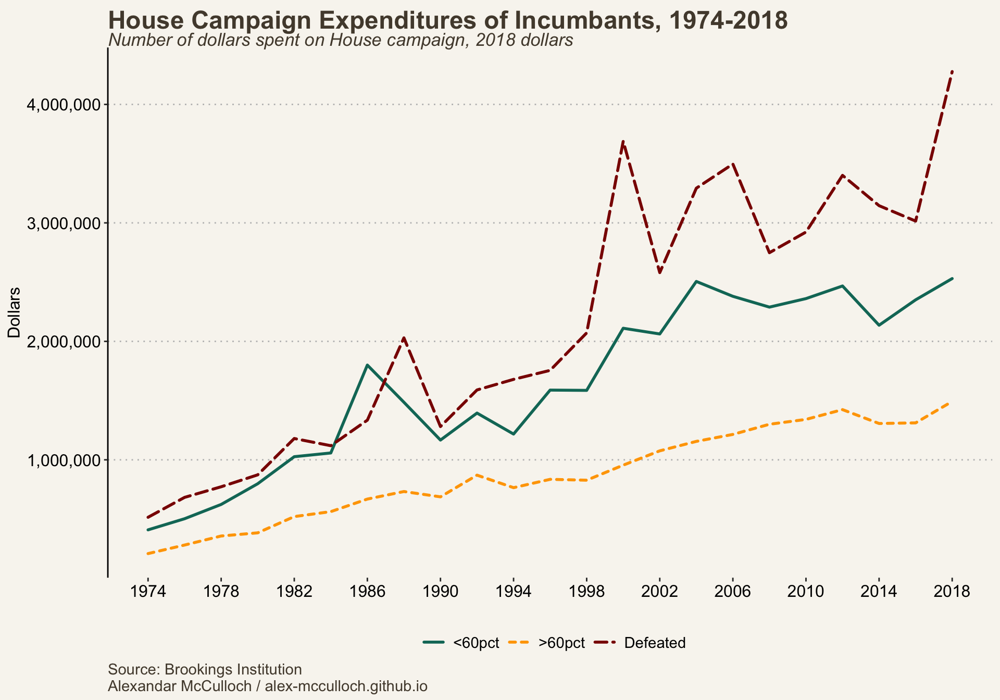

On October 3rd, Kevin McCarthy became the first Speaker in US history to be removed from the position. With a vacancy to fill, and interim Speaker Patrick McHenry serving only a limited role, Rep. Jim Jordan was the GOP’s first choice to replace McCarthy; however, he failed to acquire the necessary number of votes. As of Wednesday, October 25th, Rep. Mike Johnson of Louisiana is the new Speaker of the House.
This remarkable turn of events in the People’s House serves as a vivid example of the fluid and ever-changing nature of this legislative institution. Congress’s story is marked by continuous transformation, encompassing shifts in norms that influence legislation, elections, and the characteristics of its members. Let’s take a closer look at how Congress has evolved over the past half-century.
The Shape and Size of Bills Have Changed Since 1948
Fewer and fewer bills have been introduced in Congress, while the size of proposed legislation has increased. The last Congress to propose 600 or more bills was the 101st Congress, which served 1989-1991. Since 1991, every Congress has proposed fewer than 600 bills. Simultaneously, the majority of Congresses after the 94th (serving 1975-1977) proposed a total of 4,600 pages of statutes or more.
Of the bills introduced, fewer are being passed. Historically, the House has struggled more than the Senate in passing legislation. The percentage of proposed bills being passed by the House has remained under 20% since 1954. The most striking change during this period was the Senate’s ability to pass these larger bills. The Senate passed 56% of bills in 1956 which dropped to under one percent in 2018.
There are a couple of reasons why legislation has grown in size. First, it has simply become more difficult to pass bills. The current polarized climate forces lawmakers to spend more time negotiating on more issues. This process results in larger bills as teams of legislators compromise and add specific policies that both sides approve of into one giant bill. As Professor of Political Science, Sarah Binder points out, “When you come up against a deadline, everything is multiple trains are leaving the station, and you put them all on the same track. And that’s how you make deals.”
Second, passing legislation is complicated, as laws are often interconnected. For example, Republicans had a difficult time repealing the Affordable Care Act back in 2017 as there was a question as to how to replace it, what goals it would achieve, and what problems in Obamacare it would fix. Moreover, healthcare is a complicated industry and there are many more like it.
Polarization in Congress has Steadily Increased Since the 1950s
To gauge the extent of polarization in the United States, a tool often utilized is the DW-NOMINATE dataset. Developed by Keith Poole and Howard Rosenthal, this dataset provides a means to quantify and track the ideological positions of members of Congress. These scores are calculated using votes cast by each Congressional member. The score of a member of Congress falls on a liberal-conservative spectrum measured between -1 and +1. Elite polarization is then calculated by obtaining the absolute difference between average Republican and Democratic scores.
There is a clear growing divide among members of Congress. Neither the House nor the Senate are immune from rising levels of polarization. The divide in both chambers has not been this extreme since Reconstruction. Much of this divide can be attributed to the ideological evolution of the Republican party.
Senate and House Republicans have exhibited a more rapid rightward shift compared to the gradual leftward movement of Democrats. We can see this increased rate of change begin in the late 1960s and continue through 2023. Between 1967 and 2023, the GOP’s nominate score increased by 100% while the Democrat’s score increased by approximately 27%. This has resulted in a party system where Republicans are more conservative than Democrats are liberal.

The increasing polarization within Congress and the broader public, coupled with delayed legislative action, has contributed to a growing sense of mistrust in Congress and the government. Over time, this erosion of trust in government institutions has become evident in survey data. For instance, in 1970, the average percentage of Americans who indicated that they trusted the government to consistently do what is right was slightly over 50%. However, by 2022, this figure had plummeted to a mere 20%. Congress has struggled to regain the trust of the American people, as it hasn’t enjoyed the confidence of more than 25% of Americans since 2006.
| Related: Americans are Not as Polarized as We Think |
Congress is Getting Older
Senators are often older than the average Representative. This is not surprising as the House is elected every two years, providing more opportunities for voters to remove members of Congress earlier than Senators.
The current Congress has an average age of about 59. Separating this by party and chamber we can see this average drops slightly for House members and increases for Senate members. The oldest member of Congress is Iowa Senator Chuck Grassley who is 90 years old and the youngest is Florida Representative Maxwell Frost who is 26 years of age.
The Baby Boom generation primarily drives this increase in age. In 2023, 48.3% of members of Congress are boomers. Accounting for the 5.4% of members who are of the Silent generation, over half of Congress are over the age of 59.
Most interestingly, Boomers in Congress are doing better holding onto a plurality than previous generations. This is their 25th Congress and they make up nearly half of the institution. At this point in their careers, the Silent Generation made up about one-third, the Greatest Generation performed similarly at 45.4%, and the Lost Generation managed to be one-quarter of Congress. Although Boomers are close to matching the Greatest Generation at this point in their careers, the Greatest Generation’s birth years lasted 27 years while Boomers’ birth years lasted 19 years. Given the eight-year difference, we’d expect members of the Greatest Generation to last longer in Congress.
Such an older Congress has consequences on legislation. Legislators tend to concern themselves with issues that most impact constituents that are most similar to them. Indeed, Curry and Hayden (2018) found that senior lawmakers are more likely to sponsor legislation focused on particular senior issues when those issues are less publicly salient.
Furthermore, a focus on senior issues likely comes at the cost of attention paid to the issues affecting young Americans. There is already a generational divide on key issues. For instance, young Americans are more concerned with the impact of climate change than their older counterparts are. Housing and healthcare are topics of concern for all Americans, however, younger and older generations approach the topics from different areas of need. Young voters are more concerned with affordable housing and the opportunity to build wealth, while older Americans are more focused on access to assisted living and retirement funds.
Campaign Expenditures are on the Rise
Campaign funds for House incumbents have shown a consistent upward trend since 1974. Interestingly, the amount of money raised by these incumbents is closely tied to the outcome of their elections. Incumbents who secure their re-election with more than 60% of the vote tend to raise less money. This phenomenon can be attributed to the fact that these incumbents often represent safe districts and, therefore, don’t need as much funding to compete effectively. On the contrary, incumbents who face defeat in their re-election bids tend to spend the most money on their campaign efforts.

Some of this rise in campaign contributions can be traced to the number of political action committees (PAC). The total number of super PACs that contribute to campaigns sharply increased between 1976 and 1986 after plateauing for about ten years.
Furthermore, since 2000, the majority of contributions are from independent expenditures. The Federal Election Commission defines this term as “an expenditure for a communication that expressly advocates the election or defeat of a clearly identified candidate and which is not made in coordination with any candidate or their campaign or political party.” This can include super PACs, individual organizations, such as unions, and businesses/corporations.
For more information on how voters distribute their donations, which businesses contribute the most to campaigns, and to whom they contribute visit Open Secrets.
Citation
BibTeX citation:
@online{mcculloch2023,
author = {McCulloch, Alexandar},
title = {How {Congress} {Chagnes} {Over} {Time}},
date = {2023-10-29},
url = {https://alex-mcculloch.github.io/posts/2023-10-29-congress-change/},
langid = {en}
}
For attribution, please cite this work as:
McCulloch, Alexandar. 2023. “How Congress Chagnes Over
Time.” October 29, 2023. https://alex-mcculloch.github.io/posts/2023-10-29-congress-change/.